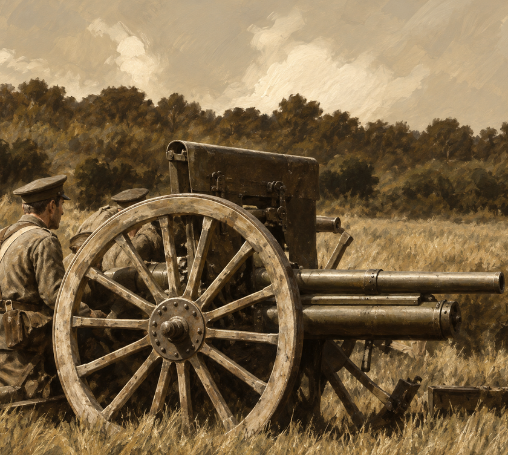
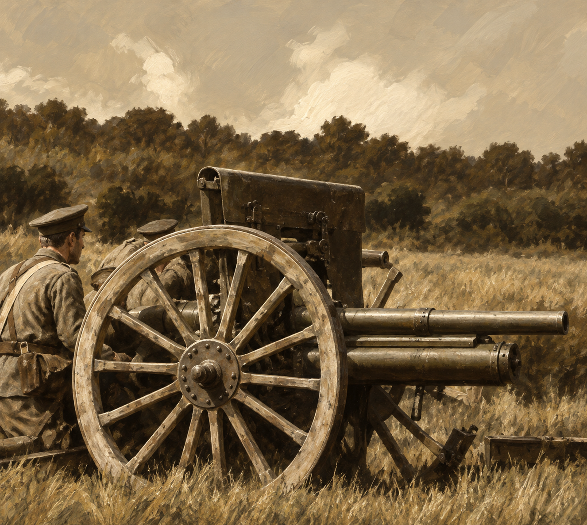

Logical size: 210 × 188
The user's approximate 90% resemblance target applies after Lanczos reduction. This is a visual target, not a computed score. The old UI border is deliberately separate.
Offline candidate shared by CP_lArtillery and EC_lArtillery. Runtime acceptance remains pending.
Contract and verification · Crop, exports and hashes · Exact generation prompt and inputs
The user's approximate 90% resemblance target applies after Lanczos reduction. This is a visual target, not a computed score. The old UI border is deliberately separate.

1326 × 1187. Export crop: 1260 × 1128 at (33, 29), then 4× → 2× → 1×.
